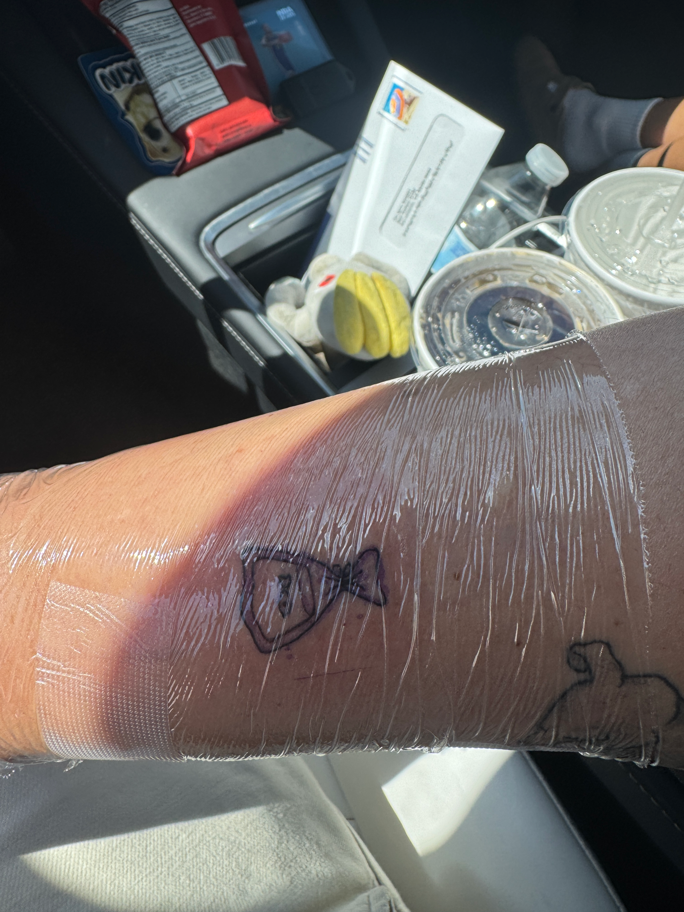
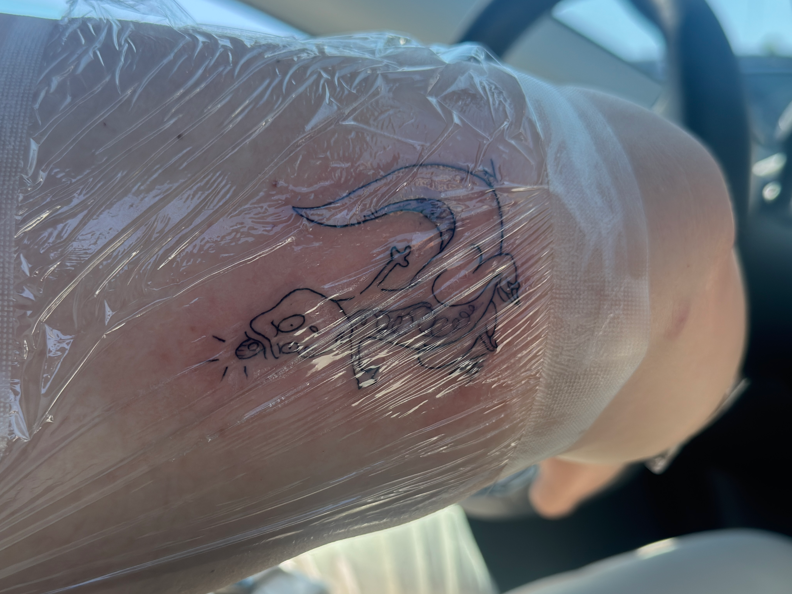
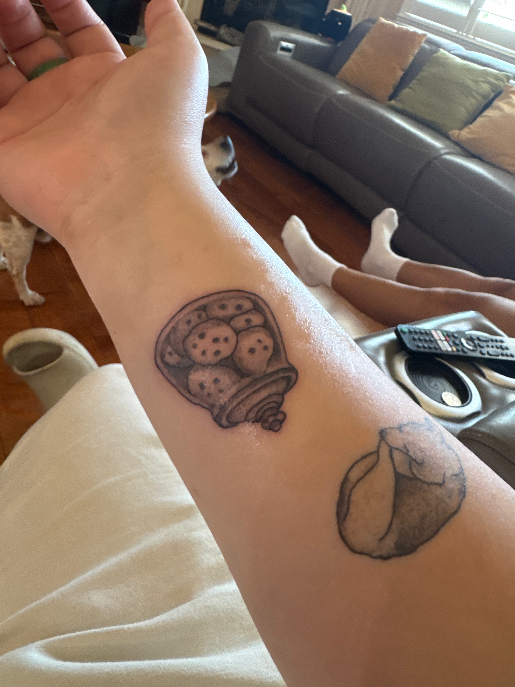
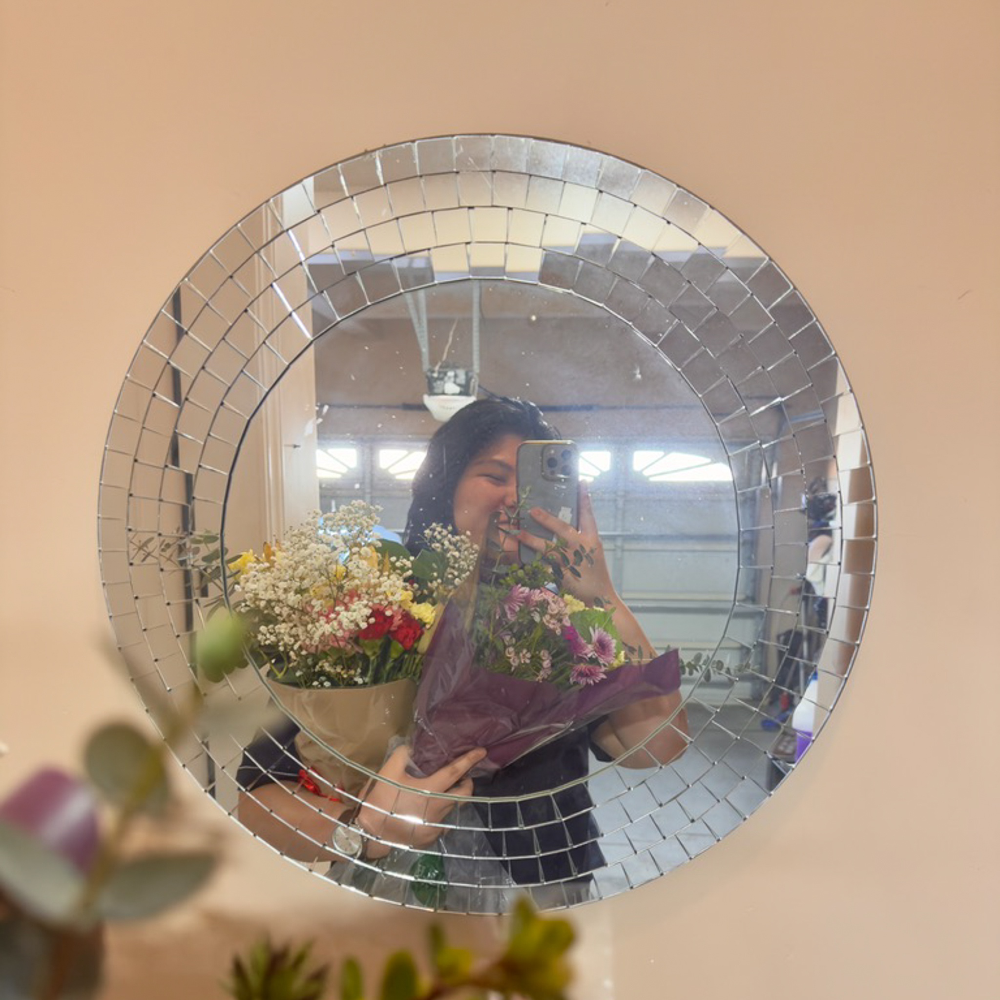

August 16, 2026
New Tattoos
recently got 3 more new tattos...what that makes 10 now?? Wow am i cool yet?

The first one was a goldfish. As Coach Lasso said, "You know what the happiest animal on Earth is? It's a goldfish. You know why? Got a ten-second memory. Be a goldfish." Which is just a reminder to let things go.

The second one is a T-rex from Meet the Robinsons, which is about an orphan who spends his whole life thinking about the family that abandons him, and thoughout the movie, he learns that if he just keeps moving forward his family will come.

The last one is obvious, i like baking and i bake a lot of cookies.
August 16, 2026 • Updates
Hey guys the newsletter will be ready soon, so if you want to be updated via email when i post sign up!
August 16, 2026 • Updates
Charlie Says Hi Guys, and hes hoping everyone is having a better day than he is. He got his ears looked at today AND a bath. sheesh poor guy.

August 15, 2026 • Updates
As most of you guys know, when I went to New York, I went to see Hadestown on Broadway. And it was spectacular. The set was breathtaking and the singing had so much emotion behind it. Well yesterday I went to see the pro shot, for the non-theater kids reading this, it's just the show recorded professionally. And let me just say, wow, they were somehow able to capture the depth and hypnotic feeling that you can only get when watching a show live. I caught myself doing the head tilting thing I do when I'm only watching a live show, just in a trance. Alas, I do believe watching the show is still worth it, you will never be able to recreate the energy and immersion that a broadway show should have.
Augest 14,2026• Updates
Would it be weird if I were to explain the blog name? well most of yall know, shady has been dubed my nickname since middle school. geuss what is found under a tree...shade. there ya go
August 14, 2026 • Updates
Yall Im pretty excited to use this blog, Ive been thinking about ditching insta cuz like why else should I have it other than updating people but now I have this. And now I have an outlet to just any inside thought is now an outside thought. Anyways idk if ill even finish the Music and Book page. Will see.
August 14, 2026 • Updates

Hopefully you are able to read this, if you are. HEYYYYY FIRST POST WHO THIS??? Since this is my first post I would like to send some acknowledgements. First Erica, she was the one to inspire me to make a website and helped me whenever she could. Erica's Blog As well as my friend Tiffany who helped come up with this sick ass logo. And lastly Grace, who laughed her way though reading all the bios and rough drafts.
August 14, 2026 • Updates
Just a few things to keep in mind while browsing: Firslty, these events are allllllll definitely fictional. And lastly, im trying to not use spell check as often so if you find a typo, and you are the first person to know. I will personaly send you ONE WHOLE DOLLAR